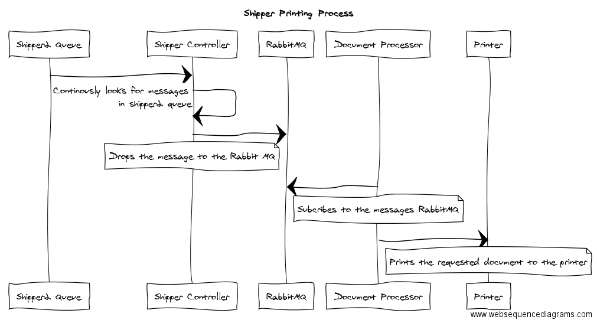

Synapse Shipper
Modern document generation and printing platform for Synpase WMS and other sub-systems.
Developed by CL Application Development Team
Accessibility
Select the theme that suit your environment:
Solarized (default) -
Black -
White -
League -
Sky
Beige -
Simple
Serif -
Blood -
Night -
Moon
Year 2016


New Systems - How it needs to be?

How we get there?
Where we are today?
Where are the developers?
Why new shipper?
- Vendor Support
- Delphi is no longer supported by Crystal Reports SDK.
- Migration from 32 bit SDK to 64 bit.
- Reliable, Scalable and Resilient
- Less number of servers. Reduced operating cost.
- Not customer specific nor environment specific.
- Wont see Apple Shipper or a Prod 4 Server.
Why new shipper? Cont.
- System Support and Management
- Web based console for shipper management.
- Dont even need to be connected to VPN to Start and Stop Shipper.
- Performance and Reliability
- Multithreaded Services. Not need for some one to login to the machine to run the Shipper.
- Web based console to alter the thread configuration.
- Above all - IT WORKS !!!!
New Features
- More supported document formats.
- Crystal Reports (RPT)
- Portable Document Format (PDF)
- Microsoft Document Formats (XLS, DOC etc)
- Thermal Labels (Address Labels, UCC etc)
- Binray Data Formats. (Documents send via web services as byte arrays.)
- Not limitted to synapse printing
- Carton Contents Label after shipping label from ConnectShip - VVN
- Carton Contents Label via hip printers - UQLO
- Gate Pass printing for YMS.
New Features - Cont.
- API's to receive print request
- Rest Based End Point - Web Services
- Message Queue - RabbitMQ
- More communication options
- Fire and Forget - Synapse Pack Slip Printing
- Request and Response - FEL Printing via Dashboard for Easy Pick
System Interaction
Shipper Request Process
Shipper Request Process

What is next?
- Load Balancing and DR Configurations
- Complete the RabbitMQ clustering test before peak.
- Performance Enhancements
- Memory usage enhancements across solution.
- Print speed optimization.
- New Features
- Web based visibility tool.
- Performance metrics.
- Improved health monitoring and alerting.